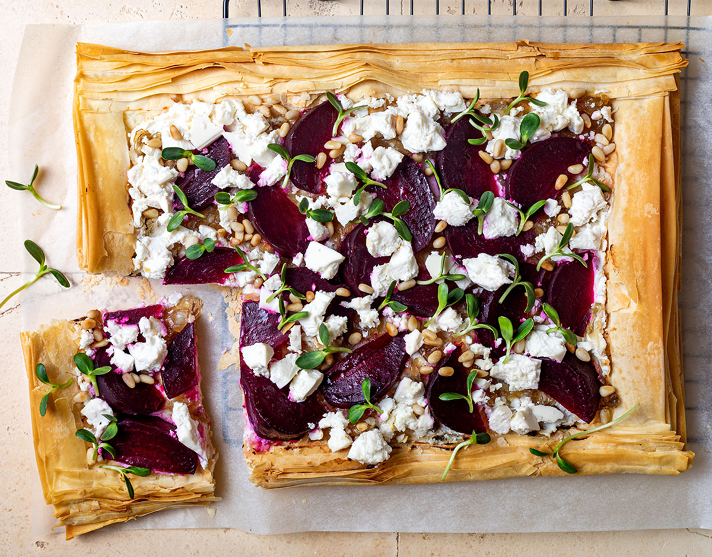

Feta and Beetroot Tart

Description
A Filo pastry tart with beetroot and feta cheese. The perfect dish for an evening meal in the summer or as a light snack.
Add pine nuts, cress or rocket leaves for extra flavour. Enjoy with a side salad of lettuce, tomatoes and cucumber.
Ingredients
- Filo pastry
- 4 medium beetroot
- 200g Feta cheese
- 1 egg yolk
- a handful of pine nuts
- a handful of cress or rocket leaves
Steps
- Pre-heat the oven to 210 degrees celsius.
- Lay out the Filo pastry on an oven tray.
- Use a brush to spread the egg yolk all over the pasrty, especially along the edges.
- Finely slice the beetroot.
- Crumble the Feta cheese into small pieces.
- Spread the beetroot over the Filo pastry. Then spread the Feta cheese over the beetroot.
- Sprinkle pine nuts over the tart.
- Put the oven tray with the tart on in the oven for 20 minutes.
- Take the tart out of the oven and sprinkle cress or rocket leaves over the top.
- Serve with a side salad of lettuce, tomatoes and cucumber.